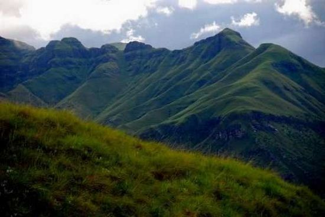

Африка — это удивительный континент, где можно встретить самые красивые формы жизни, увидеть всевозможных животных и полюбоваться природным ландшафтом. Не стоит думать, что Африка — это только пустыни, скалы и дикие животные. Это уникальный мир, где можно увидеть самую длинную реку в мире — Нил, и где находится второе по величине пресное озеро мира — Виктория. Более того, Африка считается прародиной человечества: именно здесь нашли самые древние останки ранних гоминид и их вероятных предков. Но сегодня мы решили рассказать вам о семи удивительных вершинах, которые располагаются на этом прекрасном континенте.
Килиманджаро — это горный массив, расположенный на северо-востоке Танзании на высоте 900 метров над уровнем моря плоскогорье Масаи. Когда-то на его месте были вулканы, которые потухли и, соответственно, привели к образованию трех основных вершин системы: Ширы, Манвези и Кибо.
Когда-то Килиманджаро называли Вершиной Кайзера Вильгельма в честь императора Германии. Затем массив получил свое нынешнее название — Килиманджаро, что с языка суахили переводится как «гора, которая сверкает». Несмотря на то, что вулканической активности здесь давно нет, на глубине 400 метров под кратером главной вершины Килиманджаро Кибо, существует расплавленная лава. Ученые высказывают опасения, что в будущем возможны вулканические извержения, поскольку с каждым годом температура внутри кратеров растет.
Как высочайшая вершина Африки, Килиманджаро входит в проект 7 вершин. Это неформальное объединение альпинистов, совершивших восхождения на высочайшие вершины семи континентов. Действительно, альпинизм на Килиманджаро развит превосходно. Здесь есть маршруты как для профессионалов, так и для новичков.
На самом деле забраться на одну из вершин Килиманджаро можно и со стороны Кении, но из-за отсутствия систем безопасности и оповещения вам просто запретят это сделать. Недаром по всему периметру границы Кении и Танзании круглосуточно дежурят полицейские патрули.
Атласские горы или горы Атлас расположены на территории трех государств: Марокко, Алжира и Туниса. Свое необычное название горы получили в честь атланта Атласа, который по преданиям возглавил титанов в борьбе против богов-олимпийцев и, потерпев поражение, получил от Зевса наказание — держать на своих плечах небесный свод на крайнем западе. Так и горы сравнивают с атлантом, который расправил плечи и поддерживает небо.
Высочайшая точка Атласских гор — пик Тубкаль (4167 метров), который находится на юго-западе Марокко. Именно через территорию Марокко проходят основные маршруты для желающих взойти на горы Атласа или просто любоваться их красотой. Отправляющимся покорять Атласские вершины нужно приготовиться к капризным погодным условиям.
В северо-западной части год всегда сильные ветры и обильные осадки, на высокогорных плато всегда жарко и солнечно, зато зимы очень суровые. В общем, приятного мало
Зато приятен глазу будет растительный мир: полынь, акации, дикорастущая альфа и многое другое. На высоте более 3000 метров можно даже встретить настоящие участки альпийских лугов.
Марокканцы верят, что горы Высокого Атласа так близки к небу, что на него можно попасть, просто взбираясь по склонам. Вы можете также стать ближе к небу, отправившись на покорение Тубкаля или просто занявшись треккингом по равнинной части гор.
Расположенные в Восточной Африке, горы Вирунга представляют собой цепочку из 8 вулканов. Они сосредоточены вдоль границы Руанды, ДРК и Уганды. Вирунга окружены двумя потрясающими водоемами: озером Эдварда и озером Киву. Киву, кстати, является одним из Великих Африканских озёр. Самым активными вулканами являются Ньирагонго высотой 3462 метра и Ньамурагира — 3063 метра.
Гора Карисимби является самой высокой точкой Вирунга — 4507 метров. Именно ее альпинисты и поклонники треккинга выбираются своим объектом для восхождения.
Уникальной особенностью гор Вирунга является ареал обитания горных горилл, которых в условиях дикой природы осталось всего 700 особей. 300 из которых проживают именно здесь. Так что помимо покорителей горных вершин на высоте в несколько тысяч метров можно встретить и ученых, которые наблюдают за популяцией этих животных.
Столовая гора является национальной гордостью ЮАР и даже изображена на гербе Кейптауна. Столовая гора в Кейптауне называется так потому, что похожа на стол: вершина у нее не острая, а плоская. Гора окружена почти отвесными утёсами — Пиком Дьявола и Головой Льва. Многие считают Столовую гору одним их сильнейших энергетических центров планеты, так как она создавалась природой, в отличии, например, от пирамид.
Многие туристы поднимаются на нее по канатной дороге или совершают пешее восхождение к ее вершине. Нужно быть острожными, потому что острые выступы могут поранить неопытного путешественника. Вы даже сможете увидеть здесь людей, поднимающихся на гору без обуви. Сразу станет ясно, что они здесь не в первый раз. Также стоит быть предельно внимательным к погоде, которая переменчива, а дождь может пойти совершенно внезапно.
Маршрут через ущелье «Плоский камень» наиболее простой и прямой путь для восхождения. Но если вы хотите немного экстрима, то идите по тропе Антониу де Салдана, которая была названа в честь первого человека, совершившего восхождение на Столовую гору в 1503 году.
Попав на вершину горы, вы окажетесь на территории Национального парка-заповедника, где растут уникальные орхидеи, серебряное дерево и еще более двух тысяч растений, которых больше нигде в мире не найти. С горы открывается восхитительный вид на Кейптаун и на океан, где можно увидеть китов и акул. Панорама со Столовой горы открывается просто потрясающая, недаром многие приходят сюда вечером, чтобы специально понаблюдать за закатом.
Горы Цодило, расположенный в северо-западной части Ботсваны называются «Лувром пустыни», так как на этом участке пустыни Калахари сохранилось более 4500 тысяч наскальных изображений, рассказывающих о деятельности человека за последние 100 тысяч лет.
В 2001 году Цодило включили в Список всемирного наследия ЮНЕСКО, поэтому эта территория находится под особым контролем. Тем не менее, любителям гор сюда доступ разрешен, поэтому смело можно отправляться на покорение четырех главных вершин.
Самая высокая точка имеет высоту 1400 метров и носит название «Мужчина», затем идет «Женщина», «Ребенок» и «Бугор». Существует поверье, что «женский» холм является местом, где отдыхают духи покойных и богов, которые управляют отсюда миром. Самым священным считается место почти на верхушке «мужского» холма, где по преданиям Первый Дух молился на коленях после создания мира. Бушмены верят, что отпечатки коленей Первого Духа всё ещё можно увидеть на скале.
Большинство из наскальных рисунков расположено на «женском» холме, хотя наиболее известные рисунки «кит», «два носорога», «лев» расположены на восточной стороне «мужского» холма. Для удобства путешественников рядом с вершинами открыт кемпинг с душем и туалетами, а также небольшой музей.
Питон-де-ла Фурнез, расположенный на острове, принадлежащим Франции — это самый активный на сегодняшний день вулкан в мире. Последнее извержение произошло 2 января 2010 года и продолжалось десять дней. Вершинную часть вулкана занимает кальдера 8 км в поперечнике. Кальдера имеет крутые борта и открыта на юго-восток в сторону океана.
Внутри кальдеры расположен щитовой вулкан Доломью около 400 м высотой. Вулкан начал формироваться более 530 тыс. лет назад и его потоки сформировали большую часть острова. Первыми узнали о существовании вулкана арабские мореплаватели, посещавшие остров с X века.
Первыми европейцами, увидевшими и впоследствии описавшими вулкан в 1642 г., были португальцы, назвавшие остров по дню открытия Санта-Аполлония. В 1649 г. остров был присоединен к владениям Франции под названием Бурбон, а после свержения королевской династии Бурбонов в 1793 г. переименован в Реюньон в память об «объединении патриотов» — восстание марсельцев и национальной гвардии в 1792 г.
Высота действующего вулкана Питон-де-ла-Фурнез — 2632 м, он уступает по высоте соседнему, потухшему 10 тыс. лет назад вулкану Питон-де-Неж (3069 метров) — высочайшей вершине Реюньона. Забраться на вулкан можно относительно легко, правда нужно получить специальное разрешение от местных властей, потому что проснуться эта «конфорка в океане» может в любой момент.
Драконовые горы — это высокий горный хребет расположенный в ЮАР и имеющий высоту 3482 метра. По своей сути горы — это монолитная базальтовая стена длиной почти 250 км. Самая высокая точка — гора Ткабана-Нтленьяна достигает высоты 3482 метра, а свое сказочное название горы получили из-за дымки, которая скрывает вершины гор. Кажется, что это клубы дыма, которые выпускает дракон.
Если вам посчастливится сюда попасть, то вам откроются красивые пейзажи с водопадами и каньонами, утёсами и долинами. Древнее название Драконовых гор «Укутламба», что означает «частокол из копий». Согласно зулусским легендам, здесь обитает загадочное чудище. Конечно, никакого чудовища здесь нет, но племена верят в эту легенду до сих пор.

Часть Драконовых гор окутана заповедниками и заказниками, самый известный из которых — «Королевский Национальный парк Наталя». Недалеко от него расположен и знаменитый водопад Тугела (948 метров) из пяти каскадов.
ВВЕРХ